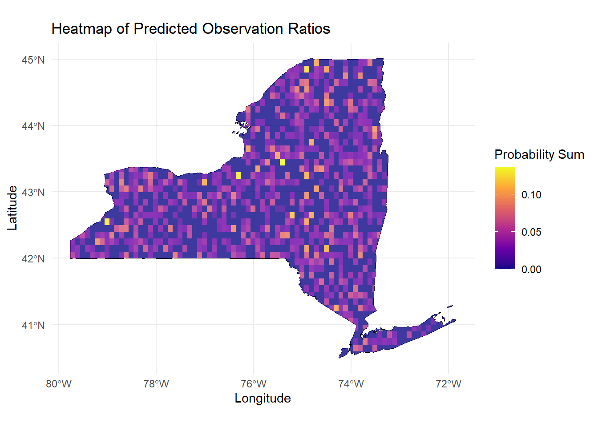

Report
Xiaoni Xu, Wenjie Wu, Boxiang Tang, Yiran Xu, and Zhengyong Chen
2024-12-04
1. Introduction
American woodcock (Scolopax minor; hereinafter woodcock) is one of the most common species of shorebirds in eastern North America (McAuley, Keppie, and Whiting Jr. 2020), and it is an early successional habitat specialist whose populations are declining throughout their range (Berigan 2024). Due to its distinct ecological niche of being one of the only shorebird species in North America that reside in habitats not adjacent to water during migration, the land mass of potential suitable habitats for this species is far greater than other water-dependent birds in Order Charadriiformes such as dunlin (Calidris alpina) or semipalmated plover (Charadrius semipalmatus). As a result, woodcocks are more easily stumbled upon in close proximity to human activities: during woodland hikes, county road drives, morning park jogs, or nighttime camps.
Along with its significance of being an umbrella species - a representative of an ecosystem specifically for conservation purposes that protects other species within its ecosystem - the woodcock is also one of the highly sought-after shorebird species among naturalists and birders due to its appearance, behavior, and relatively difficulty of detection. In addition, its ‘dance’ moves has made it into an internet favorite when paired with a wide array of music on social media (Farley 2022). Thus, it has become a curious inquiry to members of science community, policy makers, and the general public for the ecological, temporal, and spatial factors that may affect the chances one could encounter a woodcock in the wild.
For this project, we demonstrated the observational data in various ways in response to scientific questions on detection of woodcocks, along with creating a prediction model using variables both included in the observational data and inferred using latitude and longitude information. Our charts showed the power of citizen science data and the multitude of analyses that the data enables researchers and scientists to explore and answer new questions.
2. Data & Methods
2.1 eBird data
eBird (ebird.org) is an online citizen science platform for bird observations developed by Cornell Lab of Ornithology (Sullivan et al. 2009). Users can submit observations in the form of a birding checklist, which records the time, distance, duration, location, species observed, and species counts for each birding outing. With over 35,000 checklists submitted daily, eBird has congregated a sizeable amount of data capable of allowing comprehensive data analysis in various field within or adjacent to ornithology.
The observational and sampling data in the form of individual checklists on the platform, eBird Basic Dataset (EBD), is publicly available and is downloaded after submitting a request to download the data of woodcocks. Due to the large file size and limited CPU powers, the dataset is limited to observations from January 2019 to January 2024 in New York State.
eBird data is then processed using the auk package (Strimas-Mackey, Miller, and Hochachka 2023) for
data visualization and processing. The .txt files were loaded into R,
and the shared checklists were collapsed to eliminate replicated
observations. The non-complete checklists were then filtered to ensure
data cleaniness. The zero-filling method is then used to infer
non-detections using the sampling data. Some of the variables were
transformed for modeling: time is converted to a decimal value, and a
variable for speed is created. Checklists too long or too fast were
eliminated.
2.2 Environmental variables
The overall goal of this process is to access the weather information and land cover data at the places where observations occur, as these are hypothetical factors that may influence the distribution of woodcocks, and will be used in our model. We use weather data from National Oceanic and Atmospheric Administration (NOAA) (see details at https://www.noaa.gov/), an use land cover data from Multi-Resolution Land Characteristics (MRLC) Consortium.
Two data sets were used for weather data for the analysis:
Yearly weather records data: The daily weather records from each weather station, including
tmax(max temperature in degree Celsius),tmin(min temperature in degree Celsius),prcp(precipitation),snow(snow in mm),snwd(snow depth in mm)) from 2019-2024; Though may other kinds of weather information are included, we don’t consider them in our model.Station location data: A data set match the station ids with locations (latitude, longitude)
However, the weather data are recorded by weather stations, which are not necessarily at the same place with bird observations. Therefore, we assign the nearest weather station within 50 km to the places of observation. To realize the goal. We first merge the weather records from each weather station from 2019-2024 with the data set indicating the location of each weather station by station id. Then we added the weather records from the nearest weather station to the bird observation data set by date and location (i.e. latitude & longitude).
For land cover data, we use a .tif file. To integrate the land cover data from the GeoTIFF raster file into the observation CSV file, the observation data set was first converted into an sf spatial object using its longitude and latitude columns. Next, the coordinate reference system (CRS) of the sf object was aligned with the CRS of the raster file to ensure compatibility. Then, land cover values were extracted from the raster based on the observation coordinates. Finally, these extracted land cover values were added as a new column to the original data set, which was then saved as a CSV file for further analysis.
2.3 Data pre-processing and modeling
This analysis used eBird data with environmental variables to
calculate the observation ratio (obs_ratio) for modeling.
Average temperature (t_avg) and snowfall
(snow) were grouped into intervals (1°C and 5 units,
respectively), with flag variables created for each range. Observations
within the same flag were counted and normalized by the total
observations, providing the proportion of American Woodcock sightings
under specific conditions.
After grouping and flagging the data, a linear model was used to fit the data, with environmental variables as the predictors and obs_ratio as the target variable.
2.4 Predictatory data simulation
For continuous variables such as tmax,
tmin, snow, and snwd, we fitted
their distributions based on the original data and generated simulated
prediction data within the 95% confidence interval. Realistic
constraints were also incorporated, such as ensuring tmax
is always greater than tmin, southern regions having higher
temperatures than northern regions, and snowfall being lower in southern
areas compared to the north.
Within each generated grid, 1,000 data points were simulated, with
their latitude and longitude constrained to lie within the respective
grid boundaries. Using the previously trained regression model, we
predicted the observation ratio (obs_ratio) for each point
and summed these values to obtain the total observation probability for
each grid. Additionally, realistic landcover data were assigned to each
grid based on its geographic location, further enhancing the accuracy
and realism of the simulated data to align with actual conditions.
2.5 Model optimization
After constructing the full linear model, it was observed that the model contained an excessive number of predictors, which could lead to potential overfitting. To address this issue and optimize the final model, three regularization methods—LASSO, Ridge, and Elastic Net—were employed to perform predictor selection.
Upon identifying the optimized models recommended by each of the three methods and comparing the weights assigned to all retained predictors, we found that the predictor landcover, while initially deemed significant in the summary results of the full linear model, was assigned near-zero weights across all three optimization methods. This indicates that landcover contributes minimally to the model. Therefore, to maintain model simplicity, it is recommended to exclude this predictor.
2.6 Griding and heating map ploting
We applied grid operations to the map of New York State, dividing it into grids to more precisely identify bird observation locations and simulate real-world conditions. After multiple adjustments, a grid size of 0.1 was selected as the optimal scale. The final observation probabilities of the American woodcock are displayed in the form of a heatmap.
3. Results
Preliminary exploratory analysis were carried out to answer some
common questions related to woodcock detection within New York State. By
creating a season factor and creating a bar chart showing
the number of checklists per season, we visualized the total amount and
the difference in number of observations of woodcocks each season. The
observation counts were also categorized by time of day to see if there
is any significant pattern in time of the day for detection. Then, a
chi-squared test is run to test whether the differences between season
and day times are significant. Also, the number of observations is also
summarized by county.
We also explored observer behavior to understand how the timing and duration of observation efforts influence woodcock detection. We checked the times when observations started and made a plot showing how they are spread out during the day. We also grouped the observation lengths into half-hour intervals and made another plot to see how long observers spend observing. To see how effort distance and time spent observing are connected, we created a scatter plot, and used different colors representing different times of the day.
We were able to observe a significant difference in number of observations in various variables. The season of spring and the evening are where most observations of woodcocks took place. We also observed that Tompkins county has the highest number of observations, although that is mostly attributed to the high number of eBird users and birders.
We optimized our multi-predictor prediction model using LASSO regression, Ridge regression, and elastic net. Eventually, our model uses temperature and snowfall as the predictors. Further analysis can be found on the modeling page of the project website. Eventually, a heatmap of predicted observation ratios in NY state is generated using the optimized model.

4. Conclusion and Discussion
Overall, we harnessed the power of citizen science data to both answer various questions on sightings of a rather secrete question and create a comprehensive prediction model using various temporal and spatial factors for the abundance in any given place in New York state. We used a charismatic species that is well-known in naturalist and birder community as well as anyone using social media as an example to display our methods in exploring such citizen science data; the same visualizations and analyses that we demonstrated can be easily duplicated for other species and observations, or even non-wildlife data such as occurrence of a disease or the tracking of all crimes in a city.
The observational and sampling data from eBird allows for computing absence of a species in a given time and space, something that is rather difficult to attain as most online databases only incorporate presence data. Such data allows for occupancy modeling, a prospective next-step research to our project in predicting frequency data.
Data selection has always been one of the main factors affecting the outcome of modeling in ecological and ornithological research, especially when associating with citizen science data. For eBird data, analyzing complete checklists and using effort variables as covariates made the largest difference to the model quality (Johnston et al. 2021). On the other hand, the checklists themselves also introduce bias as birders tend to over-report rare birds, such as the woodcock, and under-report common birds. Checklist submission might be driven by the availability of public green spaces where birders are attracted (Lopez, Minor, and Crooks 2020). There is also a study that demonstrate road density to be negatively associated with the sampling intensity across multiple taxa (Mair and Ruete 2016). As a result, selected sampling given the above situations can lead to incorrect inferences about the relationship between variables of interest (Grade et al. 2022).
Within the scope of time and the previous background and experience in computational and ornithological knowledge, we were able to uncover a plethora of results that would otherwise well hidden inside the data set. However, a deeper dive into the more fine-tuned ecology and micro-habitats of the woodcock (or other species that reside in succession habitats that favor areas with more urban development) is needed to provide enough precision for the prediction model suitable for ornithological research. We hope that our study can inspire more refined and comprehensive research using citizen science data that reveal further findings in avian ecology and migration.
References